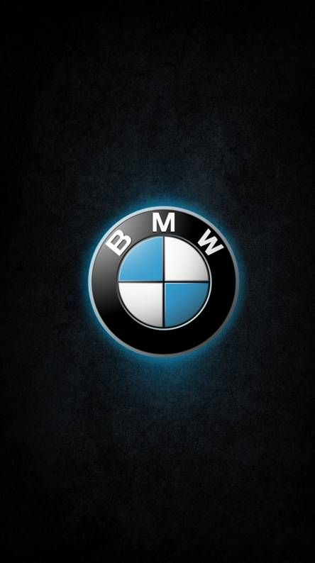
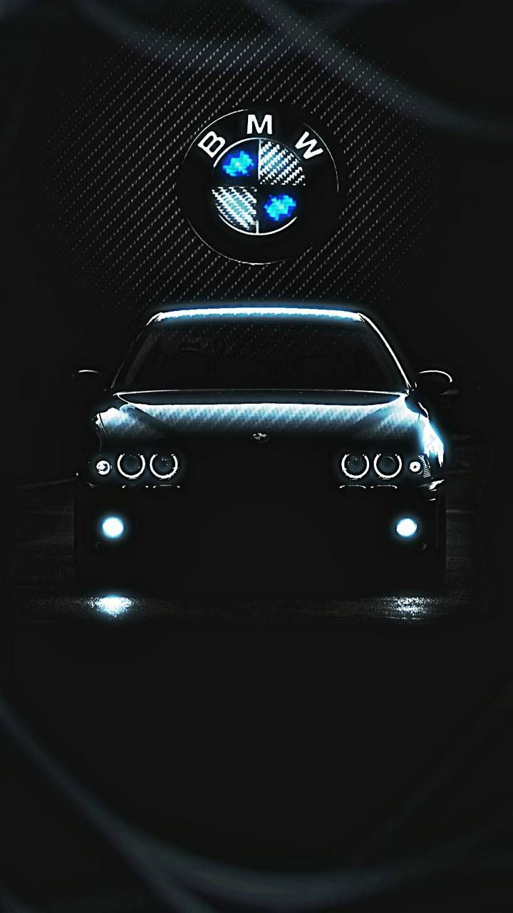

bmw
information about bmw
Bayerische Motoren Werke AG, commonly referred to as BMW (German pronunciation: [ˌbeːʔɛmˈveː] (About this soundlisten)), is a German multinational corporation which produces luxury vehicles and motorcycles. The company was founded in 1916 as a manufacturer of aircraft engines, which it produced from 1917 until 1918 and again from 1933 to 1945. Automobiles are marketed under the brands BMW, Mini and Rolls-Royce, and motorcycles are marketed under the brand BMW Motorrad. In 2017, BMW was the world's fourteenth-largest producer of motor vehicles, with 2,279,503 vehicles produced.[3] The company has significant motorsport history, especially in touring cars, Formula 1, sports cars and the Isle of Man TT. BMW is headquartered in Munich and produces motor vehicles in Germany, Brazil, China, India, Mexico, the Netherlands, South Africa, the United Kingdom, and the United States. The Quandt family is a long-term shareholder of the company (with the remaining shares owned by public float), following brothers Herbert and Harald Quandt's investments in 1959 which saved the company from bankruptcy.
market value of bmw
BMW also has local assembly operation using complete knock-down (CKD) components in Thailand, Russia, Egypt, Indonesia, Malaysia and India.[57] In the UK, BMW has a Mini factory near Oxford, plants in Swindon and Hams Hall, and Rolls Royce vehicle assembly at Goodwood. In 2020, these facilities were shut down for the period from March 23 to April 17 due to the coronavirus outbreak.[58] The BMW group (including Mini and Rolls-Royce) produced 1,366,838 automobiles in 2006 and then 1,481,253 automobiles in 2010.[59][60] BMW Motorcycles are being produced at the company's Berlin factory, which earlier had produced aircraft engines for Siemens. By 2011, about 56% of BMW-brand vehicles produced are powered by petrol engines and the remaining 44% are powered by diesel engines. Of those petrol vehicles, about 27% are four-cylinder models and about nine percent are eight-cylinder models.[61] On average, 9,000 vehicles per day exit BMW plants, and 63% are transported by rail.[62] Annual production since 2005, according to BMW's annual reports:[60]